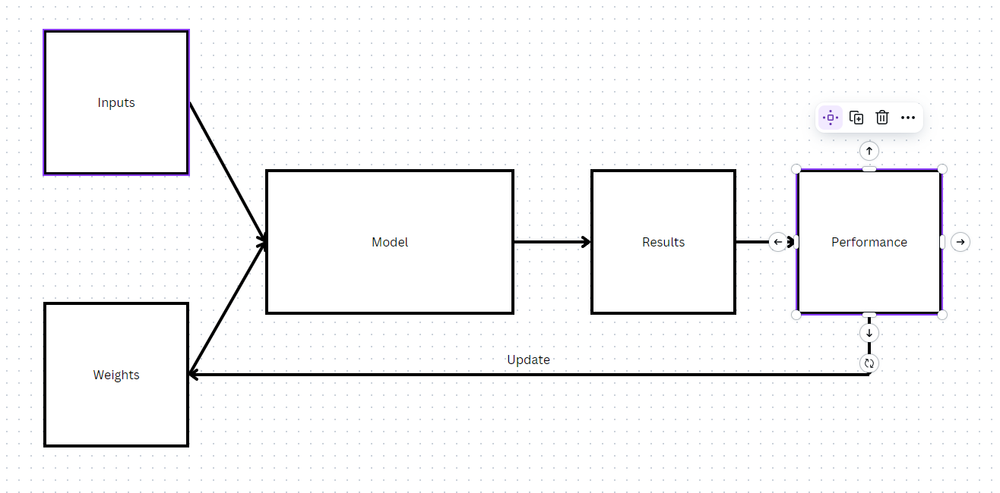

This is the first in a series of posts covering my learning/progress from fast.ai.
Chapter 1 Questionaire:
Do you need these for deep learning?
- Lots of math T/F
- Lots of data T/F
- Lots of expensive computers T/F
- A PhD T/F
Name five areas where deep learning is now the best tool in the world.
- computer vision (i.e. face recognition, object detection)
- image generation (i.e. colorizing images, increasing image resolution)
- playing games (i.e. real-time strategy, chess)
- natural language processing (i.e. classifying/summarizing documents)
- recommendation systems/search (i.e. web search, product recommendations)
- forecasting (i.e. logistical or financial)
- text to speech/speech to text
What was the name of the first device that was based on the principle of the artificial neuron?
It was called the Mark 1 Perceptron. It was created by Frank Rosenblatt, who wrote about it in his paper “The Design of an Intelligent Automaton”. The principle it was based on was derived by Warren McCulloch and Walter Pitts, who determined that a simplified model of a real neuron could be represented using simple addition and thresholding (i.e. addition and thresholding of inputs into the neuron to produce an output).
Based on the book of the same name, what are the requirements for parallel dis‐ tributed processing (PDP)?
There are 8 requirements for parallel distributed processing: - a set of processing units - a state of activation - an output function for each unit - a pattern of connectivity among units - a propagation rule for propagating patterns of activities through the network of connectivities - an activation rule for combining the inputs impinging on a unit with the current state of that unit to produce an output for the unit - a learning rule whereby patterns of connectivity are modified by experience - an environment within which the system must operate
What were the two theoretical misunderstandings that held back the field of neu‐ ral networks?
The first was a misunderstanding of the capabilities of a neural network, due to their initial inability to learn simple mathematical functions (like XOR). The second came of the (correct) theory that only using 2 layers in a neural network was sufficient to model any function. In practice this was often too slow to be useful. Coupled with the significantly weaker hardware of 30+ years ago, this resulted in a misunderstanding that neural networks were impractical.
What is a GPU?
A GPU is a Graphic Processing Unit. A piece of hardware that is very good at running many, many small computations in parallel.
Open a notebook and execute a cell containing: 1+1. What happens?
It executes and prints 2.
Follow through each cell of the stripped version of the notebook for this chapter. Before executing each cell, guess what will happen.
Completed!
Complete the Jupyter Notebook online appendix.
Completed!
Why is it hard to use a traditional computer program to recognize images in a photo?
It’s difficult because we would have to explicitly program every step of image recognization which would be tedious and error-prone. Not to mention, we’re also not sure how to explicitly define a set of rules dictating how image recognition works because to the human eye/brain, it is subconscious.
What did Samuel mean by “weight assignment”?
He meant the coefficients or parameters of the model (i.e. the mathematical function that is the model) that determine the model’s (function’s) behaviour.
What term do we normally use in deep learning for what Samuel called “weights”?
We use the term parameters.
Draw a picture that summarizes Samuel’s view of a machine learning model.
Samuel’s view of a machine learning model, capable of testing its performance with a given weight assignment and possessing a mechanism to update its weight assignment to maximize its performance (e.g. “learning” from experience). 
Why is it hard to understand why a deep learning model makes a particular prediction?
Because it is difficult to see how the neural networks work, how the parameters actually affect the prediction due to the “deepness” of the model. A model with many, many layers performs many calculations that are not visible and difficult to interpret.
What is the name of the theorem that shows that a neural network can solve any mathematical problem to any level of accuracy?
The universal approximation theorem is the theorem that shows a neural network (i.e. a mathematical function) can solve any mathematical problem to any level of accuracy. In practice, due to the constraints of limited data/hardware, this is not always possible, but we can get very close.
What do you need in order to train a model?
Data, specifically, labelled data (i.e. data with a “y” value).
How could a feedback loop impact the rollout of a predictive policing model?
A feedback loop could enhance any existing biases in the predictive policing model. This goes for any model, not just a predictive policing model.
Do we always have to use 224×224-pixel images with the cat recognition model?
No. This sizing was chosen for historical reasons - old pretrained models require this size exactly. We can increase the size of images which would improve the model’s performance at the cost of additional speed/memory.
What is the difference between classification and regression?
Classification predicts a category amongst a set of categories (i.e. a value amongst a finite set of values, like a colour), regression predicts a number amongst the infinite set of numbers (i.e. market prices).
What is a validation set? What is a test set? Why do we need them?
The validation set is a subset of the data used to validate the results of our training set. We reserve this data to ensure that our model isn’t overfitting the training data (i.e. when the model performs really well on the training data but poorly on new data, because it has learned/memorized specific characteristics of the training data). Using the validation set, we can determine if the model is overfitting if it is performing very well on the training data performing poorly on the validation set data (i.e. unable to generalize to new data). The test set is another subset of the data used to validate the results of our validation set. As we improve our model, we may make changes to our model to optimize performance on our validation set to ensure that it performs well on new data. However, this introduces a new form of bias, as we are tailoring the model to perform specifically on the validation set. The test set is used to validate that our model performs well on new data by ensuring our model performs well on not only the validation set (which helps inform our improvements), but on the test set (which is not used to inform training) as well.
What will fastai do if you don’t provide a validation set?
fastaiwill automatically create a validation set for you, defaulting to a random subset of 20% of your data.Can we always use a random sample for a validation set? Why or why not?
No, because it may not be representative of the data your model will be expected to make predictions on. Consequently, the model’s performance may seem good after training but perform poorly in the real world. It is imperative that the validation set is representative of the data the model will see in the future.
What is overfitting? Provide an example.
Overfitting is the most challenging issue when it comes to training machine learning models.
Overfitting is a characteristic of a model when it has fit its training data very well but does not perform well (or generalize) to new data (hence, it has overfit its training data). An example would be if you were training a fish classifier by length and weight, and your training data only had a single data point for each fish you were classifying. It would struggle to generalize to new data points of these fish with differing length and weight metrics.
What is a metric? How does it differ from loss?
A metric is a measurement of some value (in our case, generally some value that determines how well our model is performing), intended to be read by humans. As such, it is intended to be easily readable and understandable. Loss is a measurement of how much error your model incurred making predictions, used with some optimization algorithm (i.e. SGD) to update the model’s parameters (hopefully improving its performance).
How can pretrained models help?
Pretrained models help primarily through transfer learning (the ability for neural networks to transfer their learning to new tasks). Instead of having to build a neural network architecture and train it from scratch, we can use a proven pretrained model that has learned for similar tasks/problems. This saves a lot of time while producing potentially state-of-the-art results.
(Read the answer to the next question for a short description on how pretrained models are typically for transfer learning)
What is the “head” of a model?
The head of a model is the last couple layers in its neural network. These layers learn problem/task-specific patterns based on whatever task/problem the model was trained to solve. Typically if we want to use a pretrained model, we reset its head to random weights (or we remove these layers and add new randomly weighted ones) and re-train them to solve the task at hand.
(The earlier layers in the network learn general patterns. As we progress deeper into the network, the patterns each layer learns grows in complexity. These patterns are what enable transfer learning in pretrained models)
What kinds of features do the early layers of a CNN find? How about the later layers?
Early layers of a CNN find very general patterns in images: lines/edges, gradients. Later layers find more complex patterns: shapes, curves. Even later layers learn advanced patterns like chairs, lamps, animal features, etc.
Are image models useful only for photos?
Yes and no. Yes as in image models expect the input data to be images. No as in many forms of data can be expressed in the form of images (i.e. sound, bit vectors, etc.) making image models useful for non-traditionally image-related tasks. These images do not need to be photos.
What is an architecture?
An architecture is the actual structure of the neural network (i.e. number of layers, number of neurons/perceptrons at each layer, activation function(s), etc.). It is the structure of the model.
What is segmentation?
Segmentation is a technique used in computer vision to segment the image into different objects. It’s basically a technique to discern different things in an image. At its core its a pixel-wise classification technique (we are trying to correctly classify every pixel in the image).
What is y_range used for? When do we need it?
y_rangeis used to establish a range of y-values that the model can predict. This it typically needed in classification tasks where the result is a value in a finite set (i.e. finite range).What are hyperparameters?
Hyperparameters are parameters that affect how the parameters in the model can change. They are called hyperparameters because they are parameters that affect parameters (i.e. number of epochs, learning rate).
What’s the best way to avoid failures when using AI in an organization?
Understand what the problem is, what exactly we’re trying to solve. Establish a baseline in performance and create good validation and test sets to track how the model improves and ensure that it performs well on new data.
Here were my original answers before review:
Same
- computer vision
- text to speech
- speech to text
- natural language processing
- recommendations systems/search
Perceptron (or the Mark 1 or whatever it was).
I don’t remember. Maybe something like: operations are able to be executed independently, independent results are able to be reassembled into a complete result.
(This was completely wrong)
I don’t remember, so not sure. Maybe something like neural networks wouldn’t be able to generalize to new data/problems and that they would not be able to represent all problems (i.e. only work for specific types of problems/tasks).
(Not really correct, misunderstandings basically were: incapable of complex tasks and impractical)
6-30. Same